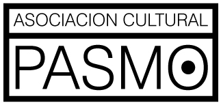
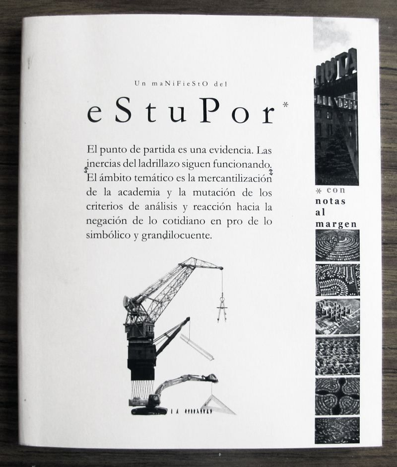
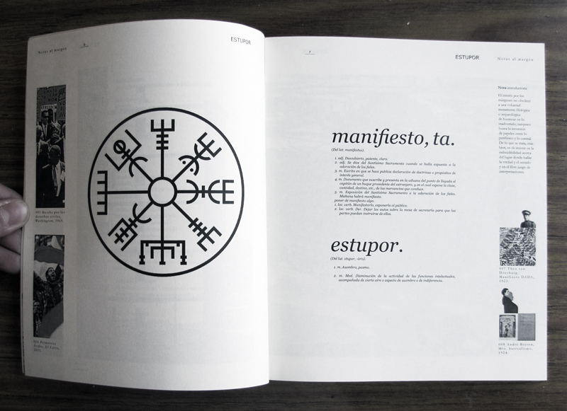
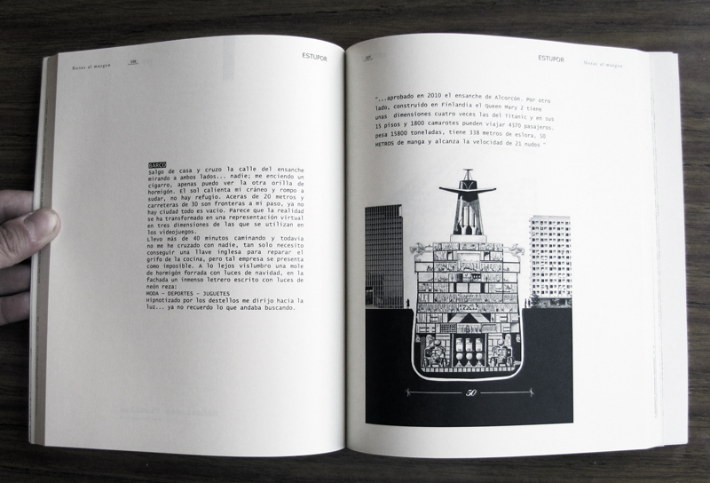
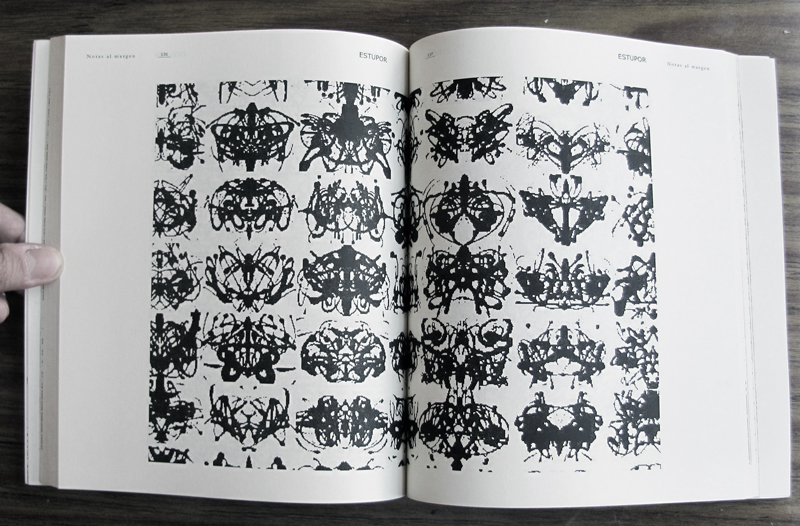
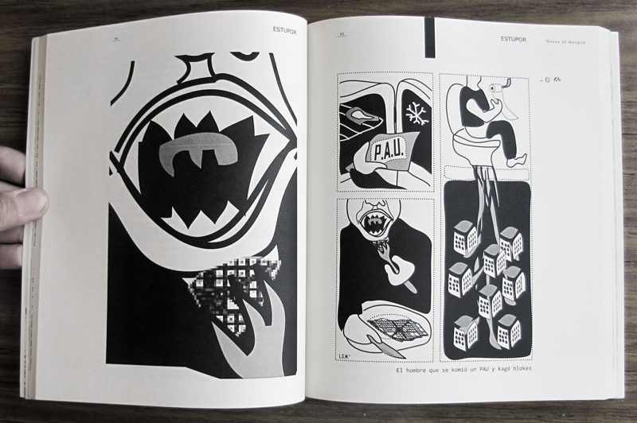
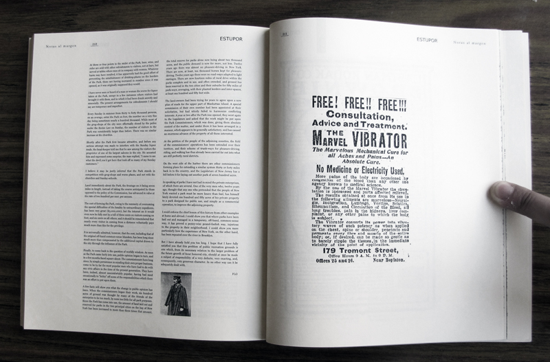

Association with Angel Lallana, Israel Páez, Pablo Pérez Schröder and Daniel Sacristán.
We promoted this initiative in order to create a think-production cloud. The idea is to connect groups of minds with one common objective, the culture production and surreal critic of our rational eastern societies. We established an association legally registered with this aims: - Promote a paranoic-critical analysis of reality in a unifying perspective - Build a framework for the surreal cultural experience. An environment in which the rationale lays shameless with the unconscious intuition. - To promote the comprehensive review of the disciplines as canon. - Merge into a single proposal science and surrealism. - Promote the absolute critical of all accepted as established. - Merge thought and action. To fulfill this purpose, will undertake the following activities: - Publishing of books incendiary content. - Organisation of conferences and meetings. - Implementation of actions identified in the built environment. - Lectures and roundtable discussions of critical interaction. - Preparation of Fanzines. - Development of comics. - Ephemeral video installations.

ESTUPOR This is PASMO first publication, in collaboration with Stella Ramos & Andrea Ramos. You can read it online here ESTUPOR is a group of reflections on the construction bubble in Spain and its influence in the Academia.

ESTUPOR is about economic psychological mechanisms of decision hidden in architect’s production processes.
ESTUPOR is about the naïve surprise of Spanish architects.
ESTUPOR is a superficial manifesto about deep rooted rituals.
ESTUPOR is a compilation of articles, images, comics and tales.